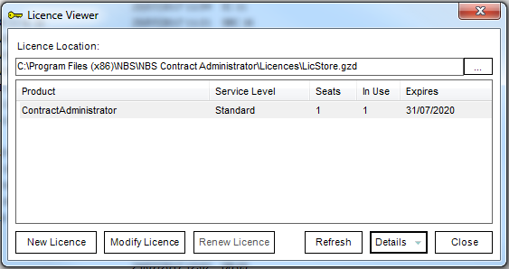
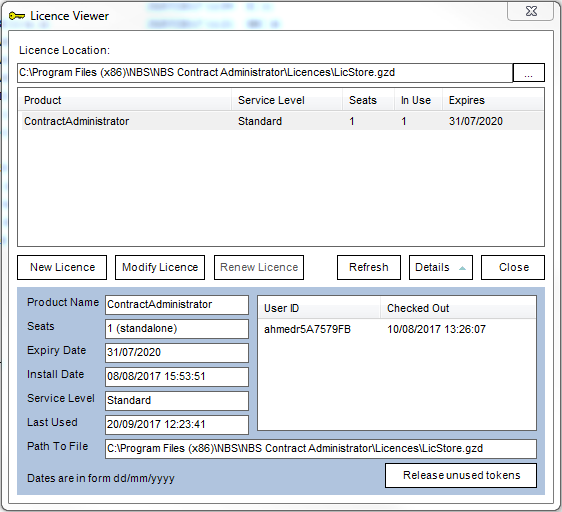

Tools: Licence Viewer |
The Licence Viewer displays details of the current NBS licence files for the user. This can be accessed by going in to Tools > Licence Status within the software.

It is possible to renew the licence files from this dialog. If the licence has expired but the user would like to access the licence viewer, they can do so by following the steps below:
It is further possible to view which user is accessing the licence by clicking on the Details button which will expand the window down:

If the licence has expired, select the licence in the list and click on Renew Licence button in the licence viewer. If the licence is in its' grace period, click on Modify Licence instead.
See also:
Tools - Remove Locks
Tools - Compact and Repair
Tools - LAN Settings
Licensing
Renewing the Licence